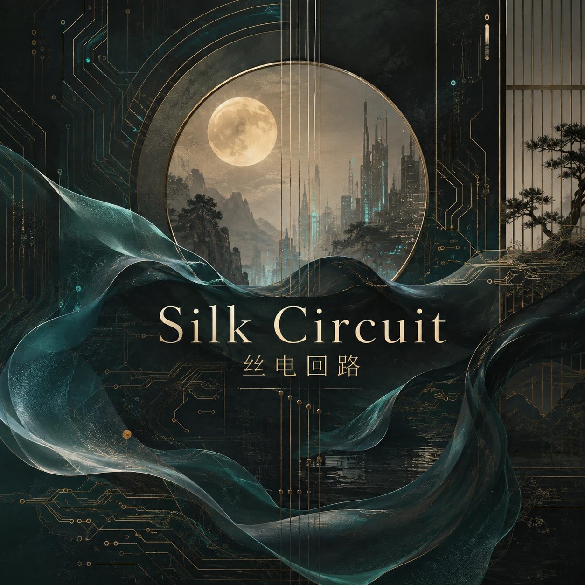
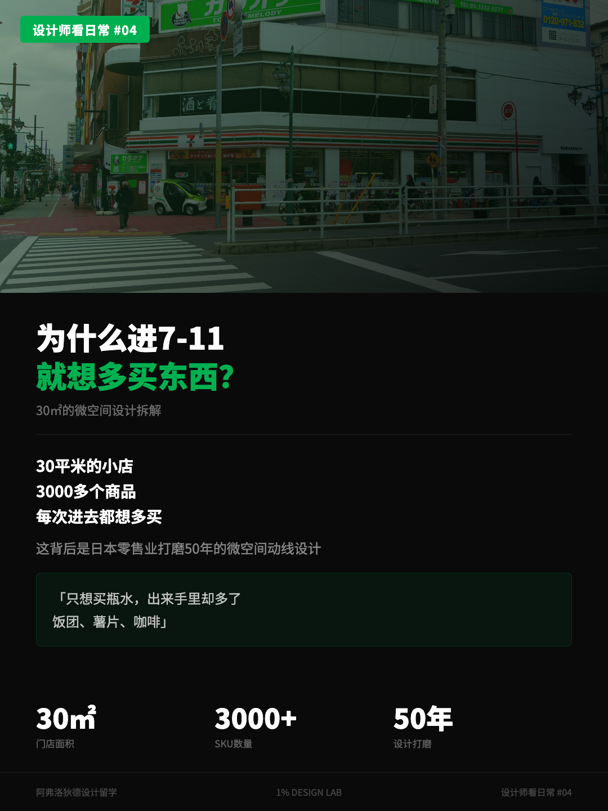
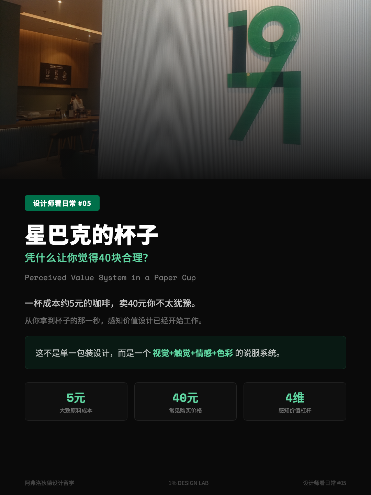
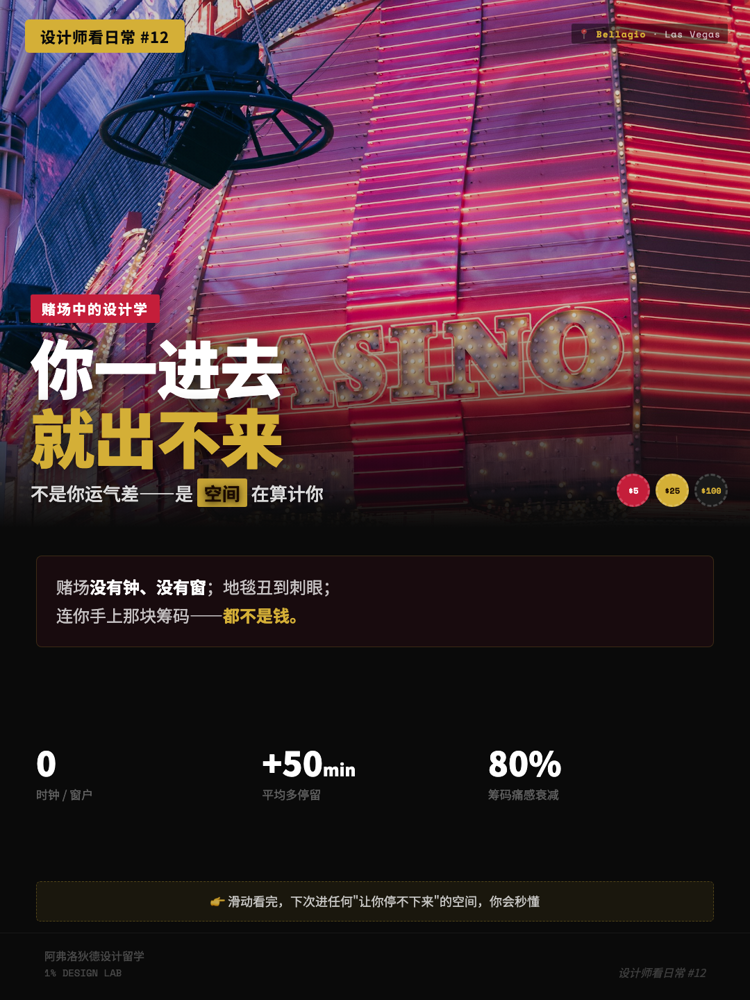
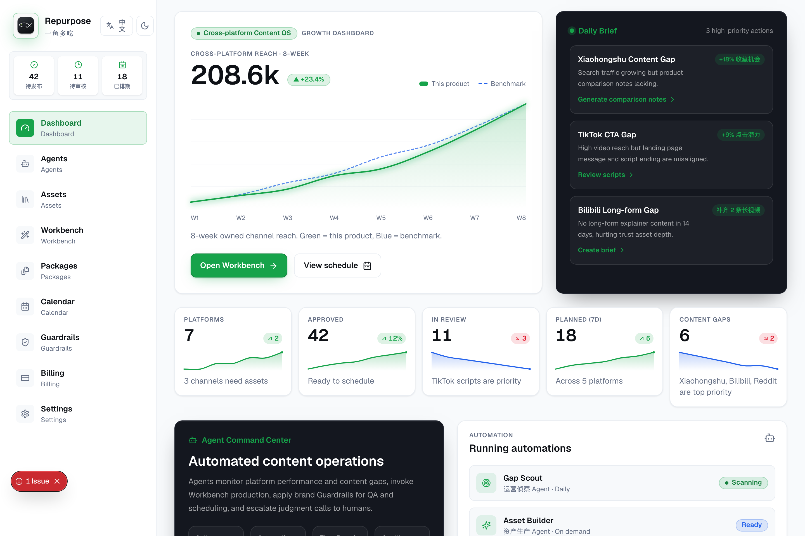
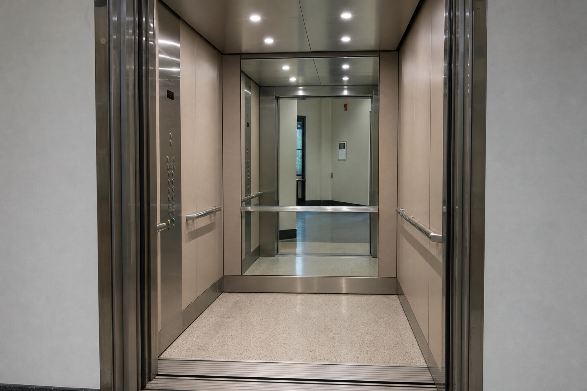
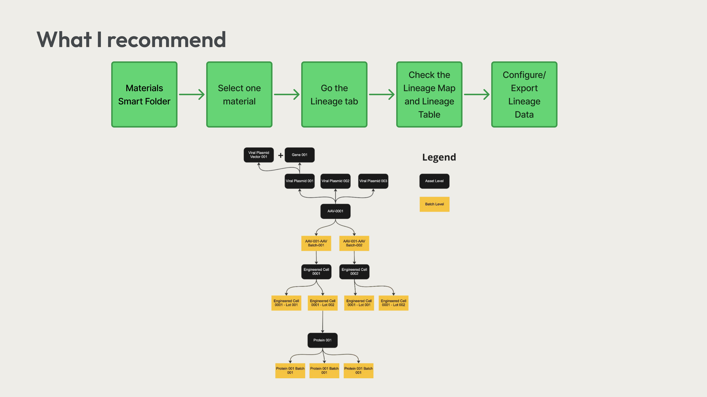

Independent notes by Joey Zhao
AI agents
product design and shipping
You won't find "design matters" essays here. I take apart a shipped interface or a fast-food chair and show what I saw and what I traded off. Numbers circulating online get re-checked, and the ones I can't trace get called out.
Designing AI Agents Beyond the Screen
Real agents time out, fail, and stay quiet exactly when they're unsure. Three shipped products, one essay on progress, evidence, and handing control back to humans.
Read the essay →Latest writing

The pharma software story that began with a marriage in need of saving
What a chemist’s drafting table can teach a product designer about revisions, handoffs and lost work.
6 min read 02

How Does AI Help Make a Drug? From One Molecule to a Lung Function Test
Chemists chose molecule 55 from a list of 79. What did AI save them, and how did a decision I made at Revvity Signals help me catch a missing compound?
8 min read 03
How I Made Neon Dream with AI
159.84 seconds, no lyrics. I set the world first, a future city after rain, then let Suno close in on it version by version, up to the replay after its NetEase release.
10 min read 04

Wiring Eastern Sounds into Silk Circuit
Guqin, guzheng, and xiao wired into synths and electronic rhythm. What's left of the East? A 3:19 experiment, with every trade-off written down.
11 min read 05

How a 30㎡ 7-Eleven Gets You to Buy Three Extra Things
Same company, closing stores in North America while Japan spends ¥300 billion remodeling them. Counterclockwise flow, the golden triangle, 1.5-meter shelves, the checkout zone. The viral numbers got re-checked.
11 min read 06

How a Starbucks Cup Convinces You the Price Is Fine
Bearista cups sold out again. Tapered shape, haptic signals, handwritten names, the green permission slip. A whole persuasion system on one paper cup, with the viral claims fact-checked.
10 min read 07

No Clocks, No Windows: What Is a Casino’s Design Actually Computing?
No clocks, no windows, and the carpet is ugly on purpose. I take the four spatial tricks apart one by one and re-check the scary-sounding numbers along the way.
12 min read 08

Why Can’t You Leave IKEA?
One-way layout, showroom context, the peak-end rule. All real. The "three times longer" and "40% value perception" claims I re-checked too. They don't all hold up.
11 min read 09
Where Did the Apple Store’s Door Go?
A glass wall where the door used to be, and threshold resistance near zero. Taking apart the entrance, the vitrine, and the spatial gradient, and what to steal for digital products.
11 min read 10

What Is McDonald’s Seating Actually Optimizing For?
Store photos from Hong Kong, Macau, Munich, and Budapest, side by side. What the popular "hard chairs kick you out" story leaves out becomes visible.
11 min read 11

One Brief, Fourteen Platforms
One brief became fourteen platforms. Along the way I dropped the chat box and handled a pile of AI failures. The full build-in-public record.
12 min read 12

The Mirror in the Elevator Isn’t Mainly for Checking Your Face
An elevator in an aging Shenzhen office tower sent me checking four mirror explanations one by one. The most important one has nothing to do with your face.
10 min read 13

A Product Designer Portfolio Is a Chain of Evidence
I took apart my own Signals, UnifyUX, and Finfold. A portfolio has to survive questioning. Problem, trade-off, failure, outcome. None of them optional.
11 min read